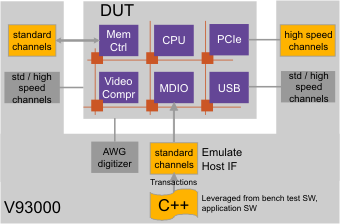

Transaction based protocol testing
Transaction based protocol testing on the V93000 test system is designed to provide a significantly higher level of test coverage in high volume manufacturing.
The V93000 provides a controlled and repeatable environment for improved identification of failures of a DUT when being stress tested under system-like conditions.

Architecturally this is achieved by:
- Implementation in per-pin test processor based architecture enabling 'worst case', repeatable, system-like tests
- Complementing existing V93000 capabilities, such as multi-port, concurrent test, source/sync, sync-by-search, dynamic pattern modification,...
Faster time to market and new integration challenges are targeted by
- DUT access via emulated host interface integrated in SmarTest, supporting IP re-use
- Increased level of abstraction to simplify test development
- Bench level design-/debug-like environment
- Reduced test development and debug cycles with fewer simulations
- Flexible protocol definition and modification
Improved test coverage and throughput are realized by
- Not using masks or searches for non-determinism and payload detection, which assures faster test times
- No need for BOST or 'golden device' on DUT board assuring reliable production test setups
- Fast transition to multi-site setup
Functional changes
- Introduced in SmarTest 7.1.0